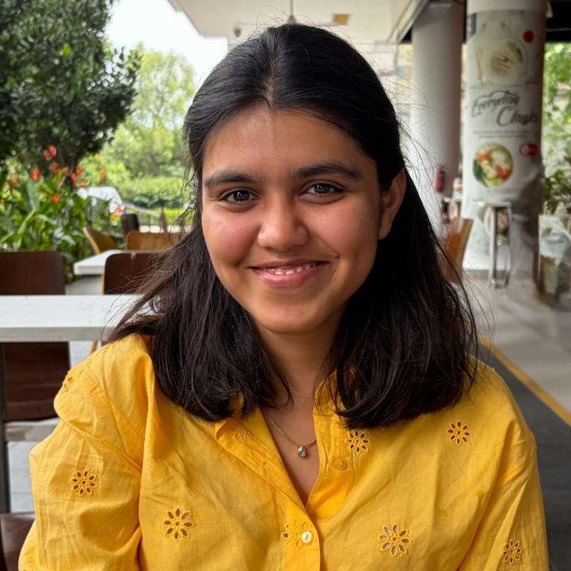

Mapping the Literature on Development Assistance in Health: A Bibliometric Analysis
with Rishab Jain & Sahil Deo

Public Policy · Research · Writing
I study how policy shapes people's lives, with a focus on health, inequality and accountability. I came to policy from literature, and I still care most about questions of power, identity and freedom.
I'm a Master in Public Policy candidate at the Lee Kuan Yew School of Public Policy (National University of Singapore), and I spent an exchange semester at Georgetown University's McCourt School of Public Policy.
Before graduate school I was a Research Associate at CPC Analytics, where I worked on health systems, development assistance, electoral accountability and digital technology. That research was published by the Observer Research Foundation. I did my undergraduate degree in Literary & Cultural Studies at FLAME University.
Lee Kuan Yew School of Public Policy, NUS · Singapore
McCourt School of Public Policy, Georgetown University · Washington, D.C.
Lenskart
CPC Analytics
Policy research on healthcare costs, development assistance for health, election manifestos, gaming, the metaverse and risk communication. Co-authored with Sahil Deo, Yugank Goyal and others.
FLAME University · Pune
with Rishab Jain & Sahil Deo
with Yugank Goyal & Sahil Deo
with Prachi Agarwal & Rhea Sharma
with Shambhavi Joshi & Sahil Deo
with Sahil Deo · also published in Hindi & Marathi
with Sahil Deo & Tanmay Devi
with Sahil Deo
with Sahil Deo & Tanmay Devi
All pieces on ORF and Google Scholar.
I'm always happy to talk about policy research, collaborations or new opportunities.